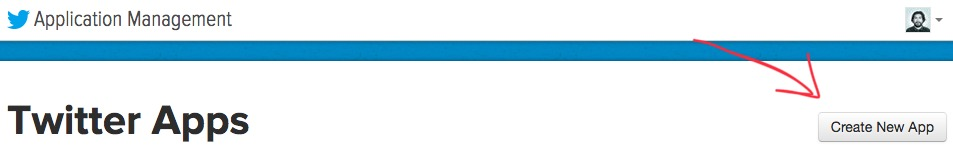
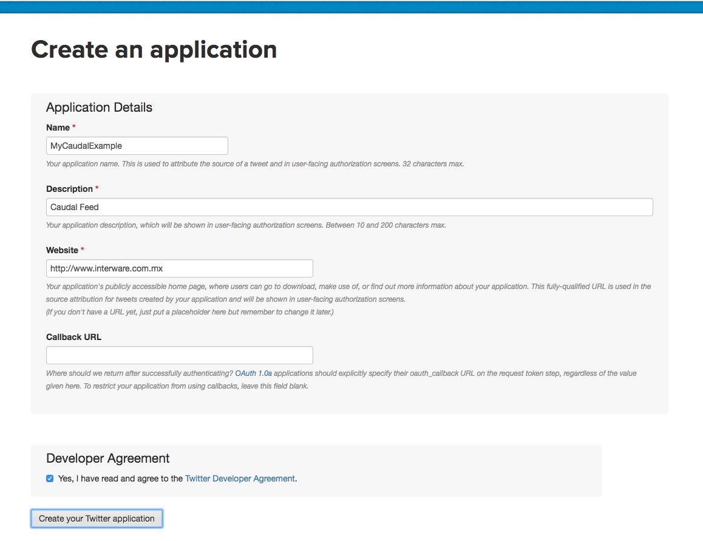
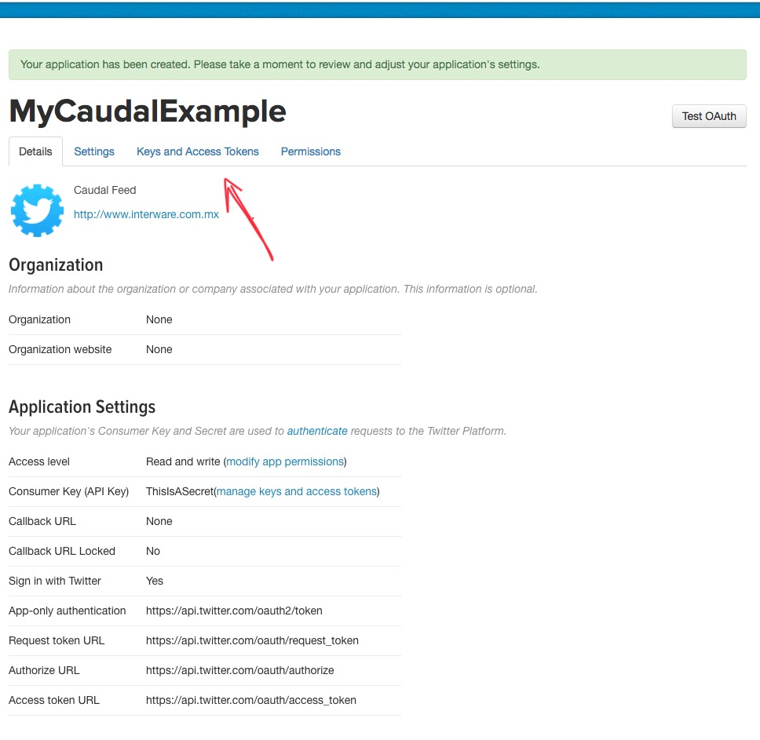
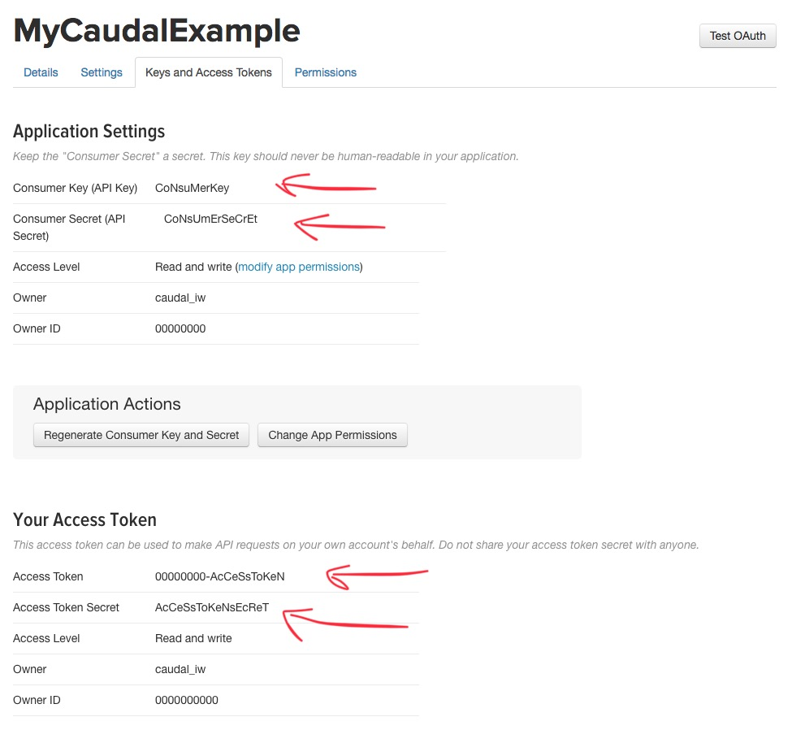

Listeners takes a datasource and feed our Caudal.
Requirements
Configuration
Caudal defines deflistener macro to declare a new listener, receives a vector with a map that contains a :type and :parameters
;; macro ;; var-name ;; listener-type |
| Element | Description |
|---|---|
| foo-listener | Name of this listener. A configuration file can contain one or many listeners. |
| :type | Symbol that points to a valid listener implementation. See mx.interware.caudal.io in API section. |
| :parameters | Map with parameters according with used listener. |
TCP
In Configuration we used deflistener macro to define a TCP channel in port 9900:
(deflistener tcp [{:type 'mx.interware.caudal.io.tcp-server |
| Parameter | Description |
|---|---|
| :port | Number of port (1-65535) to listen events. Incoming events are received in EDN format. |
| :idle-period | Idle period for socket |
Configuration
Write following configuration in config/ directory:
;; Requires |
Run Caudal passing this file as config:
$ bin/caudal -c config/example-tcp.clj start |
Open a telnet to localhost port 9900:$ telnet localhost 9900
And write an EDN map as follow:$ telnet localhost 9900
Trying ::1...
Connected to localhost.
Escape character is '^]'.
{:foo 1}
Verify generated log for new incoming event:2018-01-02 22:55:15.295 INFO [clojure-agent-send-pool-1] streams.stateless - {:foo 1, :caudal/latency 2546987}
Tailer
Reads new entry lines from a file, like tail command.(deflistener tailer [{:type 'mx.interware.caudal.io.tailer-server
:parameters {:parser read-string
:inputs {:directory "."
:wildcard "*.log"}
:delta 200
:from-end true
:reopen true
:buffer-size 1024)}])
| Parameter | Description |
|---|---|
| :parser | Function that receives a new line and returns an EDN. read-string is util if your log are written in EDN. |
| :inputs | Map with :directory to reach files and a :wildcard to filter the files to tail |
| :delta | Number with refresh file time in milliseconds |
| :from-end | Boolean, if true ignores previous entries and reads new modifications only, false to read entire file |
| :reopen | Boolean, if true reopen file(s) if are deleted, false loses file |
| :buffer-size | Number indicating bytes readed each delta time |
Configuration
Write following configuration in config/ directory:
;; Requires |
Run Caudal passing this file as config:
$ bin/caudal -c config/example-tailer.clj start |
In Caudal directory, write a new file my-edn.log with a simple EDN using the following command:$ echo "{:foo 1}" >> my-edn.log
Verify generated log for new incoming event:2018-01-02 23:38:11.091 INFO [main] io.tailer-server - {:tailing-files ()}
2018-01-02 23:38:11.093 WARN [main] io.tailer-server - {:files-not-found {:directory ".", :wildcard "my-edn.log"}}
2018-01-02 23:38:21.199 INFO [async-dispatch-2] io.tailer-server - {:added-files-to-tailer ("/opt/caudal-0.7.14/./my-edn.log")}
2018-01-02 23:38:21.205 INFO [clojure-agent-send-pool-1] streams.stateless - {:foo 1, :caudal/latency 1741426}
Syslog
Capture log outputs using Syslog protocol(deflistener syslog [{:type 'mx.interware.caudal.io.syslog-server
:parameters {:port 1111
:parser message-parser-fn}}])
| Parameter | Description |
|---|---|
| :port | Number of port (1-65535) to listen events. Incoming events are received in Syslog protocol. |
| :parser | Function that receives message part of Syslog event and return an EDN. |
Log4j
Catch log outputs using Log4j framework
(deflistener log4j [{:type 'mx.interware.caudal.io.log4j-server |
| Parameter | Description |
|---|---|
| :port | Number of port (1-65535) to listen events. Incoming events are received in Log4J protocol. |
| :parser | Function that receives message part of Log4J event and return an EDN. |
Reads tweets through Twitter API.(deflistener twitter [{:type 'mx.interware.caudal.io.twitter
:parameters {:name "Caudal"
:consumer-key "key----------------------"
:consumer-secret "consumer-secret-----------------------------------"
:token "token---------------------------------------------"
:token-secret "token-secret---------------------------------"
:terms ["challenge"]}}])
| Parameter | Description |
|---|---|
| :name | String, represents our application name. Each application should be registered in Twitter |
| :consumer-key | String, provided by Twitter |
| :consumer-secret | String, provided by Twitter |
| :token | String, provided by Twitter |
| :token-secret | String, provided by Twitter |
| :terms | Vector, terms to search live tweets |
Configuration
To get keys and secrets from Twitter API, you need to sign-in with your Twitter account.
Go to Application Manager page and make click in Create New App button.

Fill Create Application form. Name, Description and Website are mandatory, Callback URL are not needed. Remember to read and agree the Twitter Developer Agreement before click in Create your Twitter application button.

If your application was created successfully, you should see the following screen:

Go to Keys and Access Token tab to obtain your Consumer Key and Consumer Secret. Click in Create my access token to obtain your Token and Token Secret Pair

Write following configuration in config/ directory:
;; Requires |
Run Caudal passing this file as config:
$ bin/caudal -c config/example-twitter.clj start |
Verify generated log for new incoming events:2018-03-03 01:23:15.241 INFO [main] httpclient.BasicClient - New connection executed: MyCaudalExample, endpoint: /1.1/statuses/filter.json?delimited=length&stall_warnings=true
2018-03-03 01:23:15.396 INFO [hosebird-client-io-thread-0] httpclient.ClientBase - MyCaudalExample Establishing a connection
log4j:WARN No appenders could be found for logger (org.apache.http.impl.conn.PoolingClientConnectionManager).
log4j:WARN Please initialize the log4j system properly.
log4j:WARN See http://logging.apache.org/log4j/1.2/faq.html#noconfig for more info.
2018-03-03 01:23:48.358 INFO [hosebird-client-io-thread-0] httpclient.ClientBase - MyCaudalExample Processing connection data
2018-03-03 01:24:36.655 INFO [clojure-agent-send-pool-1] streams.stateless - {:quote_count 0, :in_reply_to_screen_name nil, :is_quote_status false, :coordinates nil, :filter_level "low", :in_reply_to_status_id_str nil, :place nil, :timestamp_ms "1520061876356", :geo nil, :in_reply_to_status_id nil, :entities {:hashtags [{:text "WorldCup", :indices [18 27]}], :urls [], :user_mentions [{:screen_name "History_Newz", :name "History Newz", :id 881454090244501504, :id_str "881454090244501504", :indices [3 16]}], :symbols []}, :retweeted_status {:quote_count 0, :in_reply_to_screen_name nil, :is_quote_status false, :coordinates nil, :filter_level "low", :in_reply_to_status_id_str nil, :place nil, :possibly_sensitive false, :geo nil, :in_reply_to_status_id nil, :extended_tweet {:full_text "#WorldCup Countdown: 16 Weeks to Go - The Magical Magyars, the Best Team Never to Win the World Cup? https://t.co/gJQLuKnOZD https://t.co/UmBXRCQbjd", :display_text_range [0 124], :entities {:hashtags [{:text "WorldCup", :indices [0 9]}], :urls [{:url "https://t.co/gJQLuKnOZD", :expanded_url "https://goo.gl/3iahJG", :display_url "goo.gl/3iahJG", :indices [101 124]}], :user_mentions [], :symbols [], :media [{:sizes {:large {:w 660, :h 345, :resize "fit"}, :thumb {:w 150, :h 150, :resize "crop"}, :medium {:w 660, :h 345, :resize "fit"}, :small {:w 660, :h 345, :resize "fit"}}, :media_url_https "https://pbs.twimg.com/media/DXUkikZWsAA9q7w.jpg", :type "photo", :media_url "http://pbs.twimg.com/media/DXUkikZWsAA9q7w.jpg", :id 969721471072382976, :expanded_url "https://twitter.com/History_Newz/status/969721473437970433/photo/1", :url "https://t.co/UmBXRCQbjd", :display_url "pic.twitter.com/UmBXRCQbjd", :indices [125 148], :id_str "969721471072382976"}]}, :extended_entities {:media [{:sizes {:large {:w 660, :h 345, :resize "fit"}, :thumb {:w 150, :h 150, :resize "crop"}, :medium {:w 660, :h 345, :resize "fit"}, :small {:w 660, :h 345, :resize "fit"}}, :media_url_https "https://pbs.twimg.com/media/DXUkikZWsAA9q7w.jpg", :type "photo", :media_url "http://pbs.twimg.com/media/DXUkikZWsAA9q7w.jpg", :id 969721471072382976, :expanded_url "https://twitter.com/History_Newz/status/969721473437970433/photo/1", :url "https://t.co/UmBXRCQbjd", :display_url "pic.twitter.com/UmBXRCQbjd", :indices [125 148], :id_str "969721471072382976"}]}}, :entities {:hashtags [{:text "WorldCup", :indices [0 9]}], :urls [{:url "https://t.co/PX1cYSCN8h", :expanded_url "https://twitter.com/i/web/status/969721473437970433", :display_url "twitter.com/i/web/status/9‚Ķ", :indices [102 125]}], :user_mentions [], :symbols []}, :source "<a href=\"http://twittamp.dev2.hu/\" rel=\"nofollow\">TwittAMP</a>", :lang "en", :in_reply_to_user_id_str nil, :id 969721473437970433, :contributors nil, :display_text_range [0 140], :truncated true, :retweeted false, :in_reply_to_user_id nil, :id_str "969721473437970433", :favorited false, :user {:description "The latest news of interest about #history #ancient in one place!", :profile_link_color "ABB8C2", :profile_sidebar_border_color "000000", :profile_image_url "http://pbs.twimg.com/profile_images/881525990123610112/3oJls2gK_normal.jpg", :profile_use_background_image false, :default_profile false, :profile_background_image_url "http://abs.twimg.com/images/themes/theme1/bg.png", :is_translator false, :profile_text_color "000000", :profile_banner_url "https://pbs.twimg.com/profile_banners/881454090244501504/1498999477", :name "History Newz", :profile_background_image_url_https "https://abs.twimg.com/images/themes/theme1/bg.png", :favourites_count 32, :screen_name "History_Newz", :listed_count 171, :profile_image_url_https "https://pbs.twimg.com/profile_images/881525990123610112/3oJls2gK_normal.jpg", :statuses_count 2225, :contributors_enabled false, :following nil, :lang "en", :utc_offset nil, :notifications nil, :default_profile_image false, :profile_background_color "000000", :id 881454090244501504, :follow_request_sent nil, :url nil, :translator_type "none", :time_zone nil, :profile_sidebar_fill_color "000000", :protected false, :profile_background_tile false, :id_str "881454090244501504", :geo_enabled false, :location "Global", :followers_count 36162, :friends_count 1999, :verified false, :created_at "Sun Jul 02 10:06:46 +0000 2017"}, :reply_count 0, :retweet_count 1, :favorite_count 0, :created_at "Fri Mar 02 23:49:50 +0000 2018", :text "#WorldCup Countdown: 16 Weeks to Go - The Magical Magyars, the Best Team Never to Win the World Cup?‚Ķ https://t.co/PX1cYSCN8h"}, :source "<a href=\"http://twitter.com/download/android\" rel=\"nofollow\">Twitter for Android</a>", :lang "en", :in_reply_to_user_id_str nil, :id 969835918705045504, :contributors nil, :truncated false, :retweeted false, :in_reply_to_user_id nil, :id_str "969835918705045504", :favorited false, :user {:description "‚úçüé®üíï", :profile_link_color "1DA1F2", :profile_sidebar_border_color "C0DEED", :profile_image_url "http://pbs.twimg.com/profile_images/894032388166098945/f-_miJBo_normal.jpg", :profile_use_background_image true, :default_profile true, :profile_background_image_url "", :is_translator false, :profile_text_color "333333", :profile_banner_url "https://pbs.twimg.com/profile_banners/874473957285650432/1507700544", :name "AYAN üñ§NEOGIüñ§üñ§", :profile_background_image_url_https "", :favourites_count 6906, :screen_name "AyanNeog001", :listed_count 1, :profile_image_url_https "https://pbs.twimg.com/profile_images/894032388166098945/f-_miJBo_normal.jpg", :statuses_count 11182, :contributors_enabled false, :following nil, :lang "en", :utc_offset nil, :notifications nil, :default_profile_image false, :profile_background_color "F5F8FA", :id 874473957285650432, :follow_request_sent nil, :url nil, :translator_type "none", :time_zone nil, :profile_sidebar_fill_color "DDEEF6", :protected false, :profile_background_tile false, :id_str "874473957285650432", :geo_enabled true, :location "üåê", :followers_count 332, :friends_count 1020, :verified false, :created_at "Tue Jun 13 03:50:13 +0000 2017"}, :reply_count 0, :caudal/latency 1941968, :retweet_count 0, :favorite_count 0, :created_at "Sat Mar 03 07:24:36 +0000 2018", :text "RT @History_Newz: #WorldCup Countdown: 16 Weeks to Go - The Magical Magyars, the Best Team Never to Win the World Cup? https://t.co/gJQLuKn‚Ķ"}
Caudal receives every Tweet with WorldCup occurrence in EDN format, for specific information about fields and data, take a look to Twitter API documentation.